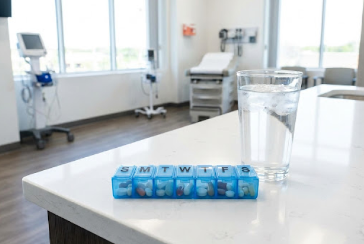

Referencia Visual

Utiliza la imagen superior para localizar tus recipientes.
10:00 AM
Toma de Medicamentos
Por favor, siga estas instrucciones cuidadosamente para su bienestar.
-
1
Localizar Pastillero
Busque la caja azul de "S-M-T-W-T-F-S" como se muestra en la imagen.
-
2
Compartimento "W"
Abra la tapa marcada con la letra W (Miércoles).
-
3
Agua Fresca
Tome el vaso de agua helada que se encuentra al lado.
M
¿Dudas? María está disponible
Tu cuidadora recibirá una notificación si no confirmas.